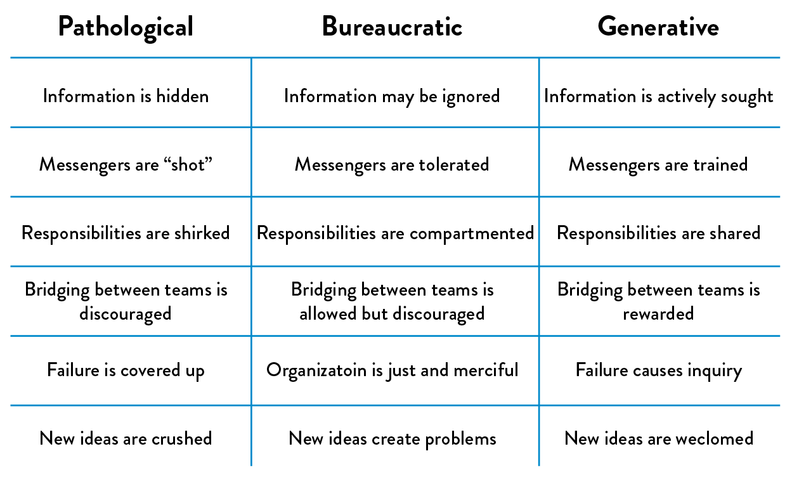

4The Third Way:
The Principles of Continual Learning and Experimentation
While the First Way addresses work flow from left to right and the Second Way addresses the reciprocal fast and constant feedback from right to left, the Third Way focuses on creating a culture of continual learning and experimentation. These are the principles that enable constant creation of individual knowledge, which is then turned into team and organizational knowledge.
In manufacturing operations with systemic quality and safety problems, work is typically rigidly defined and enforced. For instance, in the GM Fremont plant described in the previous chapter, workers had little ability to integrate improvements and learnings into their daily work, with suggestions for improvement “apt to meet a brick wall of indifference.”
In these environments, there is also often a culture of fear and low trust, where workers who make mistakes are punished, and those who make suggestions or point out problems are viewed as whistle-blowers and troublemakers. When this occurs, leadership is actively suppressing, even punishing, learning and improvement, perpetuating quality and safety problems.
In contrast, high-performing manufacturing operations require and actively promote learning—instead of work being rigidly defined, the system of work is dynamic, with line workers performing experiments in their daily work to generate new improvements, enabled by rigorous standardization of work procedures and documentation of the results.
In the technology value stream, our goal is to create a high-trust culture, reinforcing that we are all lifelong learners who must take risks in our daily work. By applying a scientific approach to both process improvement and product development, we learn from our successes and failures, identifying which ideas don’t work and reinforcing those that do. Moreover, any local learnings are rapidly turned into global improvements, so that new techniques and practices can be used by the entire organization.
We reserve time for the improvement of daily work and to further accelerate and ensure learning. We consistently introduce stress into our systems to force continual improvement. We even simulate and inject failures in our production services under controlled conditions to increase our resilience.
By creating this continual and dynamic system of learning, we enable teams to rapidly and automatically adapt to an ever-changing environment, which ultimately helps us win in the marketplace.
ENABLING ORGANIZATIONAL LEARNING AND A SAFETY CULTURE
When we work within a complex system, by definition it is impossible for us to perfectly predict all the outcomes for any action we take. This is what contributes to unexpected, or even catastrophic, outcomes and accidents in our daily work, even when we take precautions and work carefully.
When these accidents affect our customers, we seek to understand why it happened. The root cause is often deemed to be human error, and the all too common management response is to “name, blame, and shame” the person who caused the problem.† And, either subtly or explicitly, management hints that the person guilty of committing the error will be punished. They then create more processes and approvals to prevent the error from happening again.
Dr. Sidney Dekker, who codified some of the key elements of safety culture and coined the term just culture, wrote, “Responses to incidents and accidents that are seen as unjust can impede safety investigations, promote fear rather than mindfulness in people who do safety-critical work, make organizations more bureaucratic rather than more careful, and cultivate professional secrecy, evasion, and self-protection.”
These issues are especially problematic in the technology value stream—our work is almost always performed within a complex system, and how management chooses to react to failures and accidents leads to a culture of fear, which then makes it unlikely that problems and failure signals are ever reported. The result is that problems remain hidden until a catastrophe occurs.
Dr. Ron Westrum was one of the first to observe the importance of organizational culture on safety and performance. He observed that in healthcare organizations, the presence of “generative” cultures was one of the top predictors of patient safety. Dr. Westrum defined three types of culture:
- Pathological organizations are characterized by large amounts of fear and threat. People often hoard information, withhold it for political reasons, or distort it to make themselves look better. Failure is often hidden.
- Bureaucratic organizations are characterized by rules and processes, often to help individual departments maintain their “turf.” Failure is processed through a system of judgment, resulting in either punishment or justice and mercy.
- Generative organizations are characterized by actively seeking and sharing information to better enable the organization to achieve its mission. Responsibilities are shared throughout the value stream, and failure results in reflection and genuine inquiry.
 Figure 8: The Westrum organizational typology model: how organizations process information (Source: Ron Westrum, “A typology of organisation culture,” BMJ Quality & Safety 13, no. 2 (2004), doi:10.1136/qshc.2003.009522.)
Just as Dr. Westrum found in healthcare organizations, a high-trust, generative culture also predicted IT and organizational performance in technology value streams.
In the technology value stream, we establish the foundations of a generative culture by striving to create a safe system of work. When accidents and failures occur, instead of looking for human error, we look for how we can redesign the system to prevent the accident from happening again.
For instance, we may conduct a blameless post-mortem after every incident to gain the best understanding of how the accident occurred and agree upon what the best countermeasures are to improve the system, ideally preventing the problem from occurring again and enabling faster detection and recovery.
By doing this, we create organizational learning. As Bethany Macri, an engineer at Etsy who led the creation of the Morgue tool to help with recording of post-mortems, stated, “By removing blame, you remove fear; by removing fear, you enable honesty; and honesty enables prevention.”
Dr. Spear observes that the result of removing blame and putting organizational learning in its place is that “organizations become ever more self-diagnosing and self-improving, skilled at detecting problems [and] solving them.”
Many of these attributes were also described by Dr. Senge as attributes of learning organizations. In The Fifth Discipline, he wrote that these characteristics help customers, ensure quality, create competitive advantage and an energized and committed workforce, and uncover the truth.
INSTITUTIONALIZE THE IMPROVEMENT OF DAILY WORK
Teams are often not able or not willing to improve the processes they operate within. The result is not only that they continue to suffer from their current problems, but their suffering also grows worse over time. Mike Rother observed in Toyota Kata that in the absence of improvements, processes don’t stay the same—due to chaos and entropy, processes actually degrade over time.
In the technology value stream, when we avoid fixing our problems, relying on daily workarounds, our problems and technical debt accumulates until all we are doing is performing workarounds, trying to avoid disaster, with no cycles leftover for doing productive work. This is why Mike Orzen, author of Lean IT, observed, “Even more important than daily work is the improvement of daily work.”
We improve daily work by explicitly reserving time to pay down technical debt, fix defects, and refactor and improve problematic areas of our code and environments—we do this by reserving cycles in each development interval, or by scheduling kaizen blitzes, which are periods when engineers self-organize into teams to work on fixing any problem they want.
The result of these practices is that everyone finds and fixes problems in their area of control, all the time, as part of their daily work. When we finally fix the daily problems that we’ve worked around for months (or years), we can eradicate from our system the less obvious problems. By detecting and responding to these ever-weaker failure signals, we fix problems when it is not only easier and cheaper but also when the consequences are smaller.
Consider the following example that improved workplace safety at Alcoa, an aluminum manufacturer with $7.8 billion in revenue in 1987. Aluminum manufacturing requires extremely high heat, high pressures, and corrosive chemicals. In 1987, Alcoa had a frightening safety record, with 2% of the ninety thousand employee workforce being injured each year—that’s seven injuries per day. When Paul O’Neill started as CEO, his first goal was to have zero injuries to employees, contractors, and visitors.
O’Neill wanted to be notified within twenty-four hours of anyone being injured on the job—not to punish, but to ensure and promote that learnings were being generated and incorporated to create a safer workplace. Over the course of ten years, Alcoa reduced their injury rate by 95%.
The reduction in injury rates allowed Alcoa to focus on smaller problems and weaker failure signals—instead of notifying O’Neill only when injuries occurred, they started reporting any close calls as well.‡ By doing this, they improved workplace safety over the subsequent twenty years and have one of the most enviable safety records in the industry.
As Dr. Spear writes, “Alcoans gradually stopped working around the difficulties, inconveniences, and impediments they experienced. Coping, fire fighting, and making do were gradually replaced throughout the organization by a dynamic of identifying opportunities for process and product improvement. As those opportunities were identified and the problems were investigated, the pockets of ignorance that they reflected were converted into nuggets of knowledge.” This helped give the company a greater competitive advantage in the market.
Similarly, in the technology value stream, as we make our system of work safer, we find and fix problems from ever weaker failure signals. For example, we may initially perform blameless post-mortems only for customer-impacting incidents. Over time, we may perform them for lesser team-impacting incidents and near misses as well.
TRANSFORM LOCAL DISCOVERIES INTO GLOBAL IMPROVEMENTS
When new learnings are discovered locally, there must also be some mechanism to enable the rest of the organization to use and benefit from that knowledge. In other words, when teams or individuals have experiences that create expertise, our goal is to convert that tacit knowledge (i.e., knowledge that is difficult to transfer to another person by means of writing it down or verbalizing) into explicit, codified knowledge, which becomes someone else’s expertise through practice.
This ensures that when anyone else does similar work, they do so with the cumulative and collective experience of everyone in the organization who has ever done the same work. A remarkable example of turning local knowledge into global knowledge is the US Navy’s Nuclear Power Propulsion Program (also known as “NR” for “Naval Reactors”), which has over 5,700 reactor-years of operation without a single reactor-related casualty or escape of radiation.
The NR is known for their intense commitment to scripted procedures and standardized work, and the need for incident reports for any departure from procedure or normal operations to accumulate learnings, no matter how minor the failure signal—they constantly update procedures and system designs based on these learnings.
The result is that when a new crew sets out to sea on their first deployment, they and their officers benefit from the collective knowledge of 5,700 accident-free reactor-years. Equally impressive is that their own experiences at sea will be added to this collective knowledge, helping future crews safely achieve their own missions.
In the technology value stream, we must create similar mechanisms to create global knowledge, such as making all our blameless post-mortem reports searchable by teams trying to solve similar problems, and by creating shared source code repositories that span the entire organization, where shared code, libraries, and configurations that embody the best collective knowledge of the entire organization can be easily utilized. All these mechanisms help convert individual expertise into artifacts that the rest of the organization can use.
INJECT RESILIENCE PATTERNS INTO OUR DAILY WORK
Lower-performing manufacturing organizations buffer themselves from disruptions in many ways—in other words, they bulk up or add flab. For instance, to reduce the risk of a work center being idle (due to inventory arriving late, inventory that had to be scrapped, etc.), managers may choose to stockpile more inventory at each work center. However, that inventory buffer also increases WIP, which has all sorts of undesired outcomes, as previously discussed.
Similarly, to reduce the risk of a work center going down due to machinery failure, managers may increase capacity by buying more capital equipment, hiring more people, or even increasing floor space. All these options increase costs.
In contrast, high performers achieve the same results (or better) by improving daily operations, continually introducing tension to elevate performance, as well as engineering more resilience into their system.
Consider a typical experiment at one of Aisin Seiki Global’s mattress factories, one of Toyota’s top suppliers. Suppose they had two production lines, each capable of producing one hundred units per day. On slow days, they would send all production onto one line, experimenting with ways to increase capacity and identify vulnerabilities in their process, knowing that if overloading the line caused it to fail, they could send all production to the second line.
By relentless and constant experimentation in their daily work, they were able to continually increase capacity, often without adding any new equipment or hiring more people. The emergent pattern that results from these types of improvement rituals not only improves performance but also improves resilience, because the organization is always in a state of tension and change. This process of applying stress to increase resilience was named antifragility by author and risk analyst Nassim Nicholas Taleb.
In the technology value stream, we can introduce the same type of tension into our systems by seeking to always reduce deployment lead times, increase test coverage, decrease test execution times, and even by re-architecting if necessary to increase developer productivity or increase reliability.
We may also perform Game Day exercises, where we rehearse large scale failures, such as turning off entire data centers. Or we may inject ever-larger scale faults into the production environment (such as the famous Netflix “Chaos Monkey,” which randomly kills processes and compute servers in production) to ensure that we’re as resilient as we want to be.
LEADERS REINFORCE A LEARNING CULTURE
Traditionally, leaders were expected to be responsible for setting objectives, allocating resources for achieving those objectives, and establishing the right combination of incentives. Leaders also establish the emotional tone for the organizations they lead. In other words, leaders lead by “making all the right decisions.”
However, there is significant evidence that shows greatness is not achieved by leaders making all the right decisions—instead, the leader’s role is to create the conditions so their team can discover greatness in their daily work. In other words, creating greatness requires both leaders and workers, each of whom are mutually dependent upon each other.
Jim Womack, author of Gemba Walks, described the complementary working relationship and mutual respect that must occur between leaders and frontline workers. According to Womack, this relationship is necessary because neither can solve problems alone—leaders are not close enough to the work, which is required to solve any problem, and frontline workers do not have the broader organizational context or the authority to make changes outside of their area of work.§
Leaders must elevate the value of learning and disciplined problem solving. Mike Rother formalized these methods in what he calls the coaching kata. The result is one that mirrors the scientific method, where we explicitly state our True North goals, such as “sustain zero accidents” in the case of Alcoa, or “double throughput within a year” in the case of Aisin.
These strategic goals then inform the creation of iterative, shorter term goals, which are cascaded and then executed by establishing target conditions at the value stream or work center level (e.g., “reduce lead time by 10% within the next two weeks”).
These target conditions frame the scientific experiment: we explicitly state the problem we are seeking to solve, our hypothesis of how our proposed countermeasure will solve it, our methods for testing that hypothesis, our interpretation of the results, and our use of learnings to inform the next iteration.
The leader helps coach the person conducting the experiment with questions that may include:
- What was your last step and what happened?
- What did you learn?
- What is your condition now?
- What is your next target condition?
- What obstacle are you working on now?
- What is your next step?
- What is your expected outcome?
- When can we check?
This problem-solving approach in which leaders help workers see and solve problems in their daily work is at the core of the Toyota Production System, of learning organizations, the Improvement Kata, and high-reliability organizations. Mike Rother observes that he sees Toyota “as an organization defined primarily by the unique behavior routines it continually teaches to all its members.”
In the technology value stream, this scientific approach and iterative method guides all of our internal improvement processes, but also how we perform experiments to ensure that the products we build actually help our internal and external customers achieve their goals.
CONCLUSION
The principles of the Third Way address the need for valuing organizational learning, enabling high trust and boundary-spanning between functions, accepting that failures will always occur in complex systems, and making it acceptable to talk about problems so we can create a safe system of work. It also requires institutionalizing the improvement of daily work, converting local learnings into global learnings that can be used by the entire organization, as well as continually injecting tension into our daily work.
Although fostering a culture of continual learning and experimentation is the principle of the Third Way, it is also interwoven into the First and Second Ways. In other words, improving flow and feedback requires an iterative and scientific approach that includes framing of a target condition, stating a hypothesis of what will help us get there, designing and conducting experiments, and evaluating the results.
The results are not only better performance but also increased resilience, higher job satisfaction, and improved organization adaptability.
PART I CONCLUSION
In Part I of The DevOps Handbook we looked back at several movements in history that helped lead to the development of DevOps. We also looked at the three main principles that form the foundation for successful DevOps organizations: the principles of Flow, Feedback, and Continual Learning and Experimentation. In Part II, we will begin to look at how to start a DevOps movement in your organization.

Table of contents
- Preface
- Foreword
- Imagine a World Where Dev and Ops Become DevOps
-
Part I The Three Ways
- A BRIEF HISTORY
- 1 Agile, Continuous Delivery, and the Three Ways
- 2 The First Way: The Principles of Flow
- 3 The Second Way: The Principles of Feedback
- 4 The Third Way: The Principles of Continual Learning and Experimentation
-
Part II Where to Start
- Introduction
- 5 Selecting Which Value Stream to Start With
- 6 Understanding the Work in Our Value Stream, Making it Visible, and Expanding it Across the Organization
-
7 How to Design Our Organization and Architecture with Conway’s Law in Mind
- ORGANIZATIONAL ARCHETYPES
- PROBLEMS OFTEN CAUSED BY OVERLY FUNCTIONAL ORIENTATION (“OPTIMIZING FOR COST”)
- ENABLE MARKET-ORIENTED TEAMS (“OPTIMIZING FOR SPEED”)
- MAKING FUNCTIONAL ORIENTATION WORK
- TESTING, OPERATIONS, AND SECURITY AS EVERYONE’S JOB, EVERY DAY
- ENABLE EVERY TEAM MEMBER TO BE A GENERALIST
- FUND NOT PROJECTS, BUT SERVICES AND PRODUCTS
- DESIGN TEAM BOUNDARIES IN ACCORDANCE WITH CONWAY’S LAW
- CREATE LOOSELY-COUPLED ARCHITECTURES TO ENABLE DEVELOPER PRODUCTIVITY AND SAFETY
- CONCLUSION
- 8 How to Get Great Outcomes by Integrating Operations into the Daily Work of Development
-
PART III—THE FIRST WAY: THE TECHNICAL PRACTICES OF FLOW
- 9 Create the Foundations of Our Deployment Pipeline
-
10 Enable Fast and Reliable Automated Testing
- CONTINUOUSLY BUILD, TEST, AND INTEGRATE OUR CODE AND ENVIRONMENTS
-
BUILD A FAST AND RELIABLE AUTOMATED VALIDATION TEST SUITE
- CATCH ERRORS AS EARLY IN OUR AUTOMATED TESTING AS POSSIBLE
- ENSURE TESTS RUN QUICKLY (IN PARALLEL, IF NECESSARY)
- WRITE OUR AUTOMATED TESTS BEFORE WE WRITE THE CODE (“TEST-DRIVEN DEVELOPMENT”)
- AUTOMATE AS MANY OF OUR MANUAL TESTS AS POSSIBLE
- INTEGRATE PERFORMANCE TESTING INTO OUR TEST SUITE
- INTEGRATE NON-FUNCTIONAL REQUIREMENTS TESTING INTO OUR TEST SUITE
- PULL OUR ANDON CORD WHEN THE DEPLOYMENT PIPELINE BREAKS
- CONCLUSION
- 11 Enable and Practice Continuous Integration
- 12 Automate and Enable Low-Risk Releases
- 13 Architect for Low-Risk Releases
-
PART IV—THE SECOND WAY: THE TECHNICAL PRACTICES OF FEEDBACK
- Introduction
-
14 Create Telemetry to Enable Seeing and Solving Problems
- CREATE OUR CENTRALIZED TELEMETRY INFRASTRUCTURE
- CREATE APPLICATION LOGGING TELEMETRY THAT HELPS PRODUCTION
- USE TELEMETRY TO GUIDE PROBLEM SOLVING
- ENABLE CREATION OF PRODUCTION METRICS AS PART OF DAILY WORK
- CREATE SELF-SERVICE ACCESS TO TELEMETRY AND INFORMATION RADIATORS
- FIND AND FILL ANY TELEMETRY GAPS
- CONCLUSION
- 15 Analyze Telemetry to Better Anticipate Problems and Achieve Goals
- 16 Enable Feedback So Development and Operations Can Safely Deploy Code
- 17 Integrate Hypothesis-Driven Development and A/B Testing into Our Daily Work
-
18 Create Review and Coordination Processes to Increase Quality of Our Current Work
- THE DANGERS OF CHANGE APPROVAL PROCESSES
- POTENTIAL DANGERS OF “OVERLY CONTROLLING CHANGES”
- ENABLE COORDINATION AND SCHEDULING OF CHANGES
- ENABLE PEER REVIEW OF CHANGES
- POTENTIAL DANGERS OF DOING MORE MANUAL TESTING AND CHANGE FREEZES
- ENABLE PAIR PROGRAMMING TO IMPROVE ALL OUR CHANGES
- FEARLESSLY CUT BUREAUCRATIC PROCESSES
- CONCLUSION
- PART IV CONCLUSION
-
PART V—THE THIRD WAY: THE TECHNICAL PRACTICES OF CONTINUAL LEARNING AND EXPERIMENTATION
- Introduction
-
19 Enable and Inject Learning into Daily Work
- ESTABLISH A JUST, LEARNING CULTURE
- SCHEDULE BLAMELESS POST-MORTEM MEETINGS AFTER ACCIDENTS OCCUR
- PUBLISH OUR POST-MORTEMS AS WIDELY AS POSSIBLE
- DECREASE INCIDENT TOLERANCES TO FIND EVER-WEAKER FAILURE SIGNALS
- REDEFINE FAILURE AND ENCOURAGE CALCULATED RISK-TAKING
- INJECT PRODUCTION FAILURES TO ENABLE RESILIENCE AND LEARNING
- INSTITUTE GAME DAYS TO REHEARSE FAILURES
- CONCLUSION
-
20 Convert Local Discoveries into Global Improvements
- USE CHAT ROOMS AND CHAT BOTS TO AUTOMATE AND CAPTURE ORGANIZATIONAL KNOWLEDGE
- AUTOMATE STANDARDIZED PROCESSES IN SOFTWARE FOR RE-USE
- CREATE A SINGLE, SHARED SOURCE CODE REPOSITORY FOR OUR ENTIRE ORGANIZATION
- SPREAD KNOWLEDGE BY USING AUTOMATED TESTS AS DOCUMENTATION AND COMMUNITIES OF PRACTICE
- DESIGN FOR OPERATIONS THROUGH CODIFIED NON-FUNCTIONAL REQUIREMENTS
- BUILD REUSABLE OPERATIONS USER STORIES INTO DEVELOPMENT
- ENSURE TECHNOLOGY CHOICES HELP ACHIEVE ORGANIZATIONAL GOALS
- CONCLUSION
- 21 Reserve Time to Create Organizational Learning and Improvement
-
22 Information Security as Everyone’s Job, Every Day
- INTEGRATE SECURITY INTO DEVELOPMENT ITERATION DEMONSTRATIONS
- INTEGRATE SECURITY INTO DEFECT TRACKING AND POST-MORTEMS
- INTEGRATE PREVENTIVE SECURITY CONTROLS INTO SHARED SOURCE CODE REPOSITORIES AND SHARED SERVICES
- INTEGRATE SECURITY INTO OUR DEPLOYMENT PIPELINE
- ENSURE SECURITY OF THE APPLICATION
- ENSURE SECURITY OF OUR SOFTWARE SUPPLY CHAIN
- ENSURE SECURITY OF THE ENVIRONMENT
- INTEGRATE INFORMATION SECURITY INTO PRODUCTION TELEMETRY
- CREATING SECURITY TELEMETRY IN OUR APPLICATIONS
- CREATING SECURITY TELEMETRY IN OUR ENVIRONMENT
- PROTECT OUR DEPLOYMENT PIPELINE
- CONCLUSION
-
23 Protecting the Deployment Pipeline
- INTEGRATE SECURITY AND COMPLIANCE INTO CHANGE APPROVAL PROCESSES
- RE-CATEGORIZE THE MAJORITY OF OUR LOWER RISK CHANGES AS STANDARD CHANGES
- WHAT TO DO WHEN CHANGES ARE CATEGORIZED AS NORMAL CHANGES
- REDUCE RELIANCE ON SEPARATION OF DUTY
- ENSURE DOCUMENTATION AND PROOF FOR AUDITORS AND COMPLIANCE OFFICERS
- CONCLUSION
- PART VI CONCLUSION
- A Call to Action
-
Appendices
- APPENDIX 1 THE CONVERGENCE OF DEVOPS
- APPENDIX 2 THEORY OF CONSTRAINTS AND CORE, CHRONIC CONFLICTS
- APPENDIX 3 TABULAR FORM OF DOWNWARD SPIRAL
- APPENDIX 4 THE DANGERS OF HANDOFFS AND QUEUES
- APPENDIX 5 MYTHS OF INDUSTRIAL SAFETY
- APPENDIX 6 THE TOYOTA ANDON CORD
- APPENDIX 7 COTS SOFTWARE
- APPENDIX 8 POST-MORTEM MEETINGS
- APPENDIX 9 THE SIMIAN ARMY
- APPENDIX 10 TRANSPARENT UPTIME
- Additional Resources
- Endnotes
- Index
- Acknowledgments
- Author Biographies